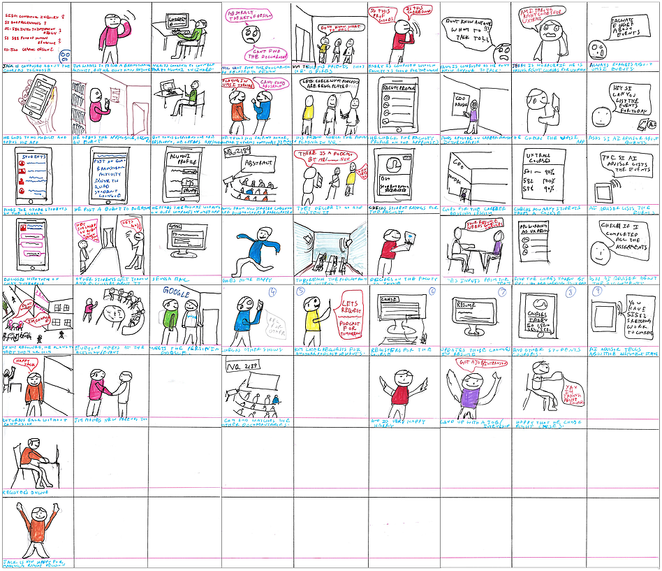
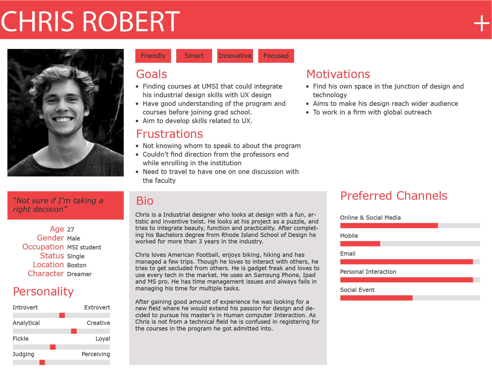
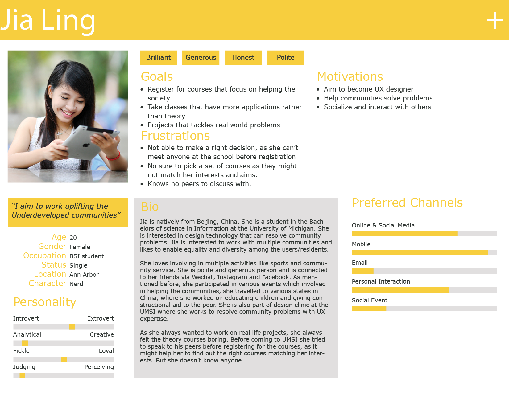
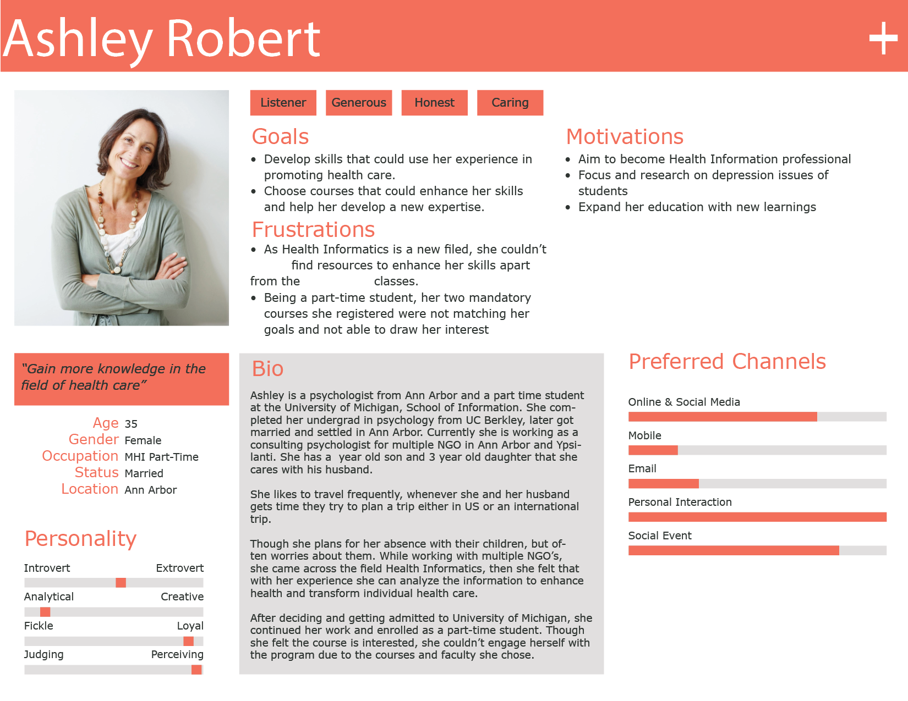
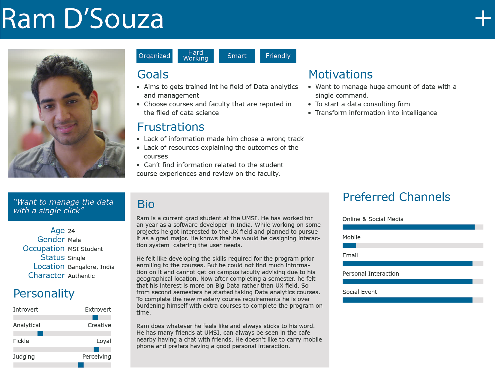

Problem
Connecting all the resources available at the School of Information to increase the availability of needed information and engage the students.
Skills Developed
User research, sketching, personas, design synthesis, brainstorming, paper prototyping, usability testing, high fidelity prototyping, Interviewing, Needs Assessment.
Solution
A mobile platform for the students that provides information related to the UMSI and enhances interaction between the students.
Tools Used
AAdobe Illustrator, InVision, Paper, Pencil, Pen, MS Office.
Design Process

Competitive analysis
I explored through the existing alternative solutions that are either available or being used by the students to find required information and to interact with each other. With parameters such as features, pros, and cons solution are later analysed by comparing with each other. The competitive analysis helped me to find the shortcomings of the available solutions.
| Desired Features | Maize pages | OOHLALA | Meetup | Groupspaces | Facebook, etc | Canvas |
|---|---|---|---|---|---|---|
| Activities | No | Yes | No | No | Yes | No |
| Events | Partially Yes | Yes | Yes | No | Yes | No |
| Directory/ Important contact info | Partially Yes | Yes | No | No | No | Yes |
| Campus News | No | Yes | No | No | No | No |
| Individuals with similar background | No | No | Yes | Yes | No | No |
| Social Media Integration | Yes | Yes | No | Yes | Yes | Yes |
| Real-time analytics | No | Yes | No | No | No | Yes |
| Social feature (Q&A wall) | No | Yes | No | Yes | Yes | Yes |
| Schedule Planner | No | Yes | No | No | Yes | No |
| Course Helper | No | Yes | No | No | No | Partially Yes |
| Career Guidance | No | Yes | No | No | No | No |
| User creating groups | No | No | Yes | Yes | Yes | No |
| Mobile App | No | Yes | Yes | No | Yes | Yes |
| Personalized group | No | No | Yes | Yes | No | No |
| Student outreach | No | Yes | No | No | No | Yes |
User Interviews and Surveys
To understand the user need I conducted six user interviews of both graduate and undergraduate students in the University of Michigan School of Information. Most of the incoming students shared that they had a bad experience while choosing the courses as they don't know much information about the schools and its professors. All the decisions made by them we either random or through the limited information available on the school's website. Current students expressed that, they are not able to keep an update on the current information trends happening around.
From the user surveys another problem got uncovered, which was that the students were not able to interact with each other, as they feel that to advance in the information field interaction with multiple students will open new ideas that lead to better innovations. Click here to find the survey used to gather the user needs.
63%
Face difficulty in transitioning to the information field.
71%
Faced problems during the course decision making.
70%
Finding difficult in learning and following the current field trends.
100%
Think that more resources from school will be helpful.
"Was not able to understand the curriculum requirement as I was in my home country during course registration."
"Need resources where we can make use of the short time between the classes."
"Not able to interact with students during the starting days of the grad school."
"I tool the course SI--- and now I think I could have waived it."
Brainstorming
Brainstorming allowed me to explore the potential solutions that could tackle the problem. After developing sketches of the brainstormed solutions, the sketches helped me in verifying my ideas with the end user.

Storyboarding
Brainstorming allowed me to explore the potential solutions that could tackle the problem. After developing sketches of the brainstormed solutions, the sketches helped me in verifying my ideas with the end user.
Persona
After understanding the users and their requirements, I developed 4 personas to analyse the multiple user needs.
   Design Rationale
Every feature can have multiple possibilities of execution, to decide on a perfect approach I used QOC (Questions, Options, and Criteria) analysis. Features such as log-In options for incoming students and processing screen while opening the application were analyzed using QOC analysis.
Wireframes
Wire-frames were developed to understand the application flow and the arrangement of elements. Below are some of the wire-frames developed, to view more click here.

Paper Prototyping (lo-fi)
After understanding the task flow and user workflow, I developed a prototype with paper to understand the structure of the application. I used these prototypes for usability testing that gave insights on improving the task flow and usability issues. Find the video for the paper prototype at this link.
Prototyping (hi-fi)
After multiple iterations of design and testing, I shaped a high fidelity prototype. Take a look at the prototype at the below.